COVID Analysis for the USA
This document explores the 2020 impact of COVID in the US in terms of excess mortality (as is defined here), total deaths of all causes, and COVID coded cases and deaths.
This file is mostly the work of Jos Martin, you can see his original post on MATLAB Central here.
Contents
- Getting the Excess Deaths Data
- What's Happening in a certain state?
- How About the Whole of the USA?
- How Many States are Exceeding their Upper Bound?
- Which States are Exceeding their Upper Bound?
- Cumulative Excess Deaths
- Weekly Deaths By Year
- Cumulitive Deaths By Year
- Covid Deaths by Age
- COVID New Cases, Deaths and Rough Mortality Trend
- Misc Functions
Getting the Excess Deaths Data
Download excess deaths data as a table.
t = webread('https://data.cdc.gov/api/views/xkkf-xrst/rows.csv');
To help plot the data on a geobubble chart it is useful to have another table that has the names of states (and other locations like "New York City" found in the above data) along with a Latitude and Longitude for that location
locations = webread("https://blogs.mathworks.com/images/loren/2020/stateLocation.csv");
We ONLY want to look at the "All Causes" data (as there are other partitions of the data in this CSV file) and we want all the data to be weighted to predicted values (since the recent data often lacks reported deaths since it takes time to get that data to the CDC - see technical note on the CDC site).
Convert Type, State and Outcome to categorical as this simplifies much of the following code which sub-selects and joins on these variables. Convert ExceedsThreshold to a logical as this is easier to deal with that a set of different strings.
t.Type = categorical(t.Type);
t.Outcome = categorical(t.Outcome);
t.State = categorical(t.State);
t.ExceedsThreshold = strcmp(t.ExceedsThreshold, 'true');
Also convert State in the locations variable to a categorical as we are going to use it in conjunction with State in the main table later on.
locations.State = categorical(locations.State);
Select the data we want (All causes and Predicted (weighted)) and remove the general State == "United States" which is the amalgamated data for all the states
t = t(t.Type == "Predicted (weighted)" & t.Outcome == "All causes" & t.State ~= "United States", :);
Get a time range covering all the data for later use
timeRange = unique(t.WeekEndingDate);
What's Happening in a certain state?
Sub-select the data using the State variable (you can change this to any state you prefer to see what is happening in that state)
m = t(t.State == "Rhode Island", :)
m =
202×17 table
WeekEndingDate State ObservedNumber UpperBoundThreshold ExceedsThreshold AverageExpectedCount ExcessLowerEstimate ExcessHigherEstimate Year TotalExcessLowerEstimateIn2020 TotalExcessHigherEstimateIn2020 PercentExcessLowerEstimate PercentExcessHigherEstimate Type Outcome Suppress Note
______________ ____________ ______________ ___________________ ________________ ____________________ ___________________ ____________________ ____ ______________________________ _______________________________ __________________________ ___________________________ ____________________ __________ ________ _________________________________________________________________________________________________________________________________________________________________________________________________________________________________________________________________________________________________________________________________________________________________________________________
2017-01-14 Rhode Island 209 242 false 211 0 0 2017 499 1185 0 0 Predicted (weighted) All causes '' ''
2017-01-21 Rhode Island 183 247 false 216 0 0 2017 499 1185 0 0 Predicted (weighted) All causes '' ''
2017-01-28 Rhode Island 226 252 false 220 0 6 2017 499 1185 0 0 Predicted (weighted) All causes '' ''
2017-02-04 Rhode Island 216 252 false 220 0 0 2017 499 1185 0 0 Predicted (weighted) All causes '' ''
2017-02-11 Rhode Island 257 255 true 223 2 34 2017 499 1185 0 0.2 Predicted (weighted) All causes '' ''
2017-02-18 Rhode Island 248 251 false 220 0 28 2017 499 1185 0 0.1 Predicted (weighted) All causes '' ''
2017-02-25 Rhode Island 209 249 false 219 0 0 2017 499 1185 0 0 Predicted (weighted) All causes '' ''
2017-03-04 Rhode Island 236 248 false 218 0 18 2017 499 1185 0 0.1 Predicted (weighted) All causes '' ''
2017-03-11 Rhode Island 203 247 false 215 0 0 2017 499 1185 0 0 Predicted (weighted) All causes '' ''
2017-03-18 Rhode Island 201 241 false 209 0 0 2017 499 1185 0 0 Predicted (weighted) All causes '' ''
2017-03-25 Rhode Island 223 242 false 211 0 12 2017 499 1185 0 0.1 Predicted (weighted) All causes '' ''
2017-04-01 Rhode Island 213 241 false 210 0 3 2017 499 1185 0 0 Predicted (weighted) All causes '' ''
2017-04-08 Rhode Island 202 239 false 208 0 0 2017 499 1185 0 0 Predicted (weighted) All causes '' ''
2017-04-15 Rhode Island 194 237 false 207 0 0 2017 499 1185 0 0 Predicted (weighted) All causes '' ''
2017-04-22 Rhode Island 211 238 false 206 0 5 2017 499 1185 0 0 Predicted (weighted) All causes '' ''
2017-04-29 Rhode Island 212 236 false 206 0 6 2017 499 1185 0 0 Predicted (weighted) All causes '' ''
2017-05-06 Rhode Island 228 231 false 202 0 26 2017 499 1185 0 0.1 Predicted (weighted) All causes '' ''
2017-05-13 Rhode Island 198 229 false 199 0 0 2017 499 1185 0 0 Predicted (weighted) All causes '' ''
2017-05-20 Rhode Island 196 222 false 192 0 4 2017 499 1185 0 0 Predicted (weighted) All causes '' ''
2017-05-27 Rhode Island 191 219 false 189 0 2 2017 499 1185 0 0 Predicted (weighted) All causes '' ''
2017-06-03 Rhode Island 142 216 false 187 0 0 2017 499 1185 0 0 Predicted (weighted) All causes '' ''
2017-06-10 Rhode Island 197 211 false 182 0 15 2017 499 1185 0 0.1 Predicted (weighted) All causes '' ''
2017-06-17 Rhode Island 200 209 false 180 0 20 2017 499 1185 0 0.1 Predicted (weighted) All causes '' ''
2017-06-24 Rhode Island 199 206 false 177 0 22 2017 499 1185 0 0.1 Predicted (weighted) All causes '' ''
2017-07-01 Rhode Island 192 208 false 179 0 13 2017 499 1185 0 0.1 Predicted (weighted) All causes '' ''
2017-07-08 Rhode Island 163 210 false 181 0 0 2017 499 1185 0 0 Predicted (weighted) All causes '' ''
2017-07-15 Rhode Island 182 213 false 184 0 0 2017 499 1185 0 0 Predicted (weighted) All causes '' ''
2017-07-22 Rhode Island 200 213 false 184 0 16 2017 499 1185 0 0.1 Predicted (weighted) All causes '' ''
2017-07-29 Rhode Island 170 214 false 185 0 0 2017 499 1185 0 0 Predicted (weighted) All causes '' ''
2017-08-05 Rhode Island 188 211 false 182 0 6 2017 499 1185 0 0 Predicted (weighted) All causes '' ''
2017-08-12 Rhode Island 150 209 false 180 0 0 2017 499 1185 0 0 Predicted (weighted) All causes '' ''
2017-08-19 Rhode Island 170 207 false 179 0 0 2017 499 1185 0 0 Predicted (weighted) All causes '' ''
2017-08-26 Rhode Island 191 208 false 179 0 12 2017 499 1185 0 0.1 Predicted (weighted) All causes '' ''
2017-09-02 Rhode Island 197 206 false 178 0 19 2017 499 1185 0 0.1 Predicted (weighted) All causes '' ''
2017-09-09 Rhode Island 206 208 false 179 0 27 2017 499 1185 0 0.2 Predicted (weighted) All causes '' ''
2017-09-16 Rhode Island 171 211 false 182 0 0 2017 499 1185 0 0 Predicted (weighted) All causes '' ''
2017-09-23 Rhode Island 203 215 false 186 0 17 2017 499 1185 0 0.1 Predicted (weighted) All causes '' ''
2017-09-30 Rhode Island 180 217 false 187 0 0 2017 499 1185 0 0 Predicted (weighted) All causes '' ''
2017-10-07 Rhode Island 182 221 false 191 0 0 2017 499 1185 0 0 Predicted (weighted) All causes '' ''
2017-10-14 Rhode Island 177 222 false 192 0 0 2017 499 1185 0 0 Predicted (weighted) All causes '' ''
2017-10-21 Rhode Island 210 223 false 193 0 17 2017 499 1185 0 0.1 Predicted (weighted) All causes '' ''
2017-10-28 Rhode Island 184 222 false 193 0 0 2017 499 1185 0 0 Predicted (weighted) All causes '' ''
2017-11-04 Rhode Island 176 221 false 191 0 0 2017 499 1185 0 0 Predicted (weighted) All causes '' ''
2017-11-11 Rhode Island 190 220 false 190 0 0 2017 499 1185 0 0 Predicted (weighted) All causes '' ''
2017-11-18 Rhode Island 210 222 false 192 0 18 2017 499 1185 0 0.1 Predicted (weighted) All causes '' ''
2017-11-25 Rhode Island 200 224 false 194 0 6 2017 499 1185 0 0 Predicted (weighted) All causes '' ''
2017-12-02 Rhode Island 206 226 false 196 0 10 2017 499 1185 0 0.1 Predicted (weighted) All causes '' ''
2017-12-09 Rhode Island 224 232 false 200 0 24 2017 499 1185 0 0.1 Predicted (weighted) All causes '' ''
2017-12-16 Rhode Island 213 234 false 204 0 9 2017 499 1185 0 0 Predicted (weighted) All causes '' ''
2017-12-23 Rhode Island 218 239 false 207 0 11 2017 499 1185 0 0.1 Predicted (weighted) All causes '' ''
2017-12-30 Rhode Island 227 238 false 206 0 21 2017 499 1185 0 0.1 Predicted (weighted) All causes '' ''
2018-01-06 Rhode Island 247 240 true 208 7 39 2018 499 1185 0 0.2 Predicted (weighted) All causes '' ''
2018-01-13 Rhode Island 243 240 true 208 3 35 2018 499 1185 0 0.2 Predicted (weighted) All causes '' ''
2018-01-20 Rhode Island 210 242 false 211 0 0 2018 499 1185 0 0 Predicted (weighted) All causes '' ''
2018-01-27 Rhode Island 222 241 false 209 0 13 2018 499 1185 0 0.1 Predicted (weighted) All causes '' ''
2018-02-03 Rhode Island 210 254 false 220 0 0 2018 499 1185 0 0 Predicted (weighted) All causes '' ''
2018-02-10 Rhode Island 219 257 false 223 0 0 2018 499 1185 0 0 Predicted (weighted) All causes '' ''
2018-02-17 Rhode Island 217 255 false 222 0 0 2018 499 1185 0 0 Predicted (weighted) All causes '' ''
2018-02-24 Rhode Island 183 251 false 218 0 0 2018 499 1185 0 0 Predicted (weighted) All causes '' ''
2018-03-03 Rhode Island 197 248 false 216 0 0 2018 499 1185 0 0 Predicted (weighted) All causes '' ''
2018-03-10 Rhode Island 215 241 false 211 0 4 2018 499 1185 0 0 Predicted (weighted) All causes '' ''
2018-03-17 Rhode Island 181 239 false 208 0 0 2018 499 1185 0 0 Predicted (weighted) All causes '' ''
2018-03-24 Rhode Island 195 236 false 204 0 0 2018 499 1185 0 0 Predicted (weighted) All causes '' ''
2018-03-31 Rhode Island 180 234 false 204 0 0 2018 499 1185 0 0 Predicted (weighted) All causes '' ''
2018-04-07 Rhode Island 229 235 false 203 0 26 2018 499 1185 0 0.1 Predicted (weighted) All causes '' ''
2018-04-14 Rhode Island 188 234 false 203 0 0 2018 499 1185 0 0 Predicted (weighted) All causes '' ''
2018-04-21 Rhode Island 211 236 false 205 0 6 2018 499 1185 0 0 Predicted (weighted) All causes '' ''
2018-04-28 Rhode Island 225 236 false 205 0 20 2018 499 1185 0 0.1 Predicted (weighted) All causes '' ''
2018-05-05 Rhode Island 228 233 false 201 0 27 2018 499 1185 0 0.1 Predicted (weighted) All causes '' ''
2018-05-12 Rhode Island 183 228 false 198 0 0 2018 499 1185 0 0 Predicted (weighted) All causes '' ''
2018-05-19 Rhode Island 209 222 false 192 0 17 2018 499 1185 0 0.1 Predicted (weighted) All causes '' ''
2018-05-26 Rhode Island 193 218 false 188 0 5 2018 499 1185 0 0 Predicted (weighted) All causes '' ''
2018-06-02 Rhode Island 194 217 false 187 0 7 2018 499 1185 0 0 Predicted (weighted) All causes '' ''
2018-06-09 Rhode Island 198 216 false 185 0 13 2018 499 1185 0 0.1 Predicted (weighted) All causes '' ''
2018-06-16 Rhode Island 181 211 false 181 0 0 2018 499 1185 0 0 Predicted (weighted) All causes '' ''
2018-06-23 Rhode Island 177 211 false 181 0 0 2018 499 1185 0 0 Predicted (weighted) All causes '' ''
2018-06-30 Rhode Island 197 212 false 183 0 14 2018 499 1185 0 0.1 Predicted (weighted) All causes '' ''
2018-07-07 Rhode Island 201 213 false 182 0 19 2018 499 1185 0 0.1 Predicted (weighted) All causes '' ''
2018-07-14 Rhode Island 187 214 false 183 0 4 2018 499 1185 0 0 Predicted (weighted) All causes '' ''
2018-07-21 Rhode Island 190 214 false 183 0 7 2018 499 1185 0 0 Predicted (weighted) All causes '' ''
2018-07-28 Rhode Island 179 212 false 182 0 0 2018 499 1185 0 0 Predicted (weighted) All causes '' ''
2018-08-04 Rhode Island 160 211 false 181 0 0 2018 499 1185 0 0 Predicted (weighted) All causes '' ''
2018-08-11 Rhode Island 182 210 false 180 0 2 2018 499 1185 0 0 Predicted (weighted) All causes '' ''
2018-08-18 Rhode Island 198 212 false 181 0 17 2018 499 1185 0 0.1 Predicted (weighted) All causes '' ''
2018-08-25 Rhode Island 197 212 false 181 0 16 2018 499 1185 0 0.1 Predicted (weighted) All causes '' ''
2018-09-01 Rhode Island 180 213 false 182 0 0 2018 499 1185 0 0 Predicted (weighted) All causes '' ''
2018-09-08 Rhode Island 206 213 false 183 0 23 2018 499 1185 0 0.1 Predicted (weighted) All causes '' ''
2018-09-15 Rhode Island 191 214 false 183 0 8 2018 499 1185 0 0 Predicted (weighted) All causes '' ''
2018-09-22 Rhode Island 192 215 false 184 0 8 2018 499 1185 0 0 Predicted (weighted) All causes '' ''
2018-09-29 Rhode Island 198 218 false 186 0 12 2018 499 1185 0 0.1 Predicted (weighted) All causes '' ''
2018-10-06 Rhode Island 193 223 false 191 0 2 2018 499 1185 0 0 Predicted (weighted) All causes '' ''
2018-10-13 Rhode Island 189 223 false 191 0 0 2018 499 1185 0 0 Predicted (weighted) All causes '' ''
2018-10-20 Rhode Island 205 220 false 190 0 15 2018 499 1185 0 0.1 Predicted (weighted) All causes '' ''
2018-10-27 Rhode Island 200 224 false 192 0 8 2018 499 1185 0 0 Predicted (weighted) All causes '' ''
2018-11-03 Rhode Island 222 224 false 191 0 31 2018 499 1185 0 0.2 Predicted (weighted) All causes '' ''
2018-11-10 Rhode Island 188 222 false 190 0 0 2018 499 1185 0 0 Predicted (weighted) All causes '' ''
2018-11-17 Rhode Island 216 222 false 191 0 25 2018 499 1185 0 0.1 Predicted (weighted) All causes '' ''
2018-11-24 Rhode Island 184 227 false 196 0 0 2018 499 1185 0 0 Predicted (weighted) All causes '' ''
2018-12-01 Rhode Island 189 231 false 198 0 0 2018 499 1185 0 0 Predicted (weighted) All causes '' ''
2018-12-08 Rhode Island 224 236 false 203 0 21 2018 499 1185 0 0.1 Predicted (weighted) All causes '' ''
2018-12-15 Rhode Island 211 242 false 207 0 4 2018 499 1185 0 0 Predicted (weighted) All causes '' ''
2018-12-22 Rhode Island 213 247 false 213 0 0 2018 499 1185 0 0 Predicted (weighted) All causes '' ''
2018-12-29 Rhode Island 204 249 false 215 0 0 2018 499 1185 0 0 Predicted (weighted) All causes '' ''
2019-01-05 Rhode Island 203 249 false 215 0 0 2019 499 1185 0 0 Predicted (weighted) All causes '' ''
2019-01-12 Rhode Island 226 249 false 215 0 11 2019 499 1185 0 0.1 Predicted (weighted) All causes '' ''
2019-01-19 Rhode Island 240 253 false 218 0 22 2019 499 1185 0 0.1 Predicted (weighted) All causes '' ''
2019-01-26 Rhode Island 220 254 false 220 0 0 2019 499 1185 0 0 Predicted (weighted) All causes '' ''
2019-02-02 Rhode Island 228 255 false 220 0 8 2019 499 1185 0 0 Predicted (weighted) All causes '' ''
2019-02-09 Rhode Island 229 257 false 222 0 7 2019 499 1185 0 0 Predicted (weighted) All causes '' ''
2019-02-16 Rhode Island 206 258 false 224 0 0 2019 499 1185 0 0 Predicted (weighted) All causes '' ''
2019-02-23 Rhode Island 210 255 false 220 0 0 2019 499 1185 0 0 Predicted (weighted) All causes '' ''
2019-03-02 Rhode Island 202 248 false 213 0 0 2019 499 1185 0 0 Predicted (weighted) All causes '' ''
2019-03-09 Rhode Island 238 240 false 207 0 31 2019 499 1185 0 0.1 Predicted (weighted) All causes '' ''
2019-03-16 Rhode Island 225 240 false 207 0 18 2019 499 1185 0 0.1 Predicted (weighted) All causes '' ''
2019-03-23 Rhode Island 208 239 false 205 0 3 2019 499 1185 0 0 Predicted (weighted) All causes '' ''
2019-03-30 Rhode Island 193 236 false 204 0 0 2019 499 1185 0 0 Predicted (weighted) All causes '' ''
2019-04-06 Rhode Island 220 242 false 207 0 13 2019 499 1185 0 0.1 Predicted (weighted) All causes '' ''
2019-04-13 Rhode Island 203 243 false 208 0 0 2019 499 1185 0 0 Predicted (weighted) All causes '' ''
2019-04-20 Rhode Island 200 245 false 212 0 0 2019 499 1185 0 0 Predicted (weighted) All causes '' ''
2019-04-27 Rhode Island 168 245 false 210 0 0 2019 499 1185 0 0 Predicted (weighted) All causes '' ''
2019-05-04 Rhode Island 213 242 false 209 0 4 2019 499 1185 0 0 Predicted (weighted) All causes '' ''
2019-05-11 Rhode Island 197 241 false 207 0 0 2019 499 1185 0 0 Predicted (weighted) All causes '' ''
2019-05-18 Rhode Island 220 233 false 199 0 21 2019 499 1185 0 0.1 Predicted (weighted) All causes '' ''
2019-05-25 Rhode Island 190 225 false 193 0 0 2019 499 1185 0 0 Predicted (weighted) All causes '' ''
2019-06-01 Rhode Island 163 225 false 192 0 0 2019 499 1185 0 0 Predicted (weighted) All causes '' ''
2019-06-08 Rhode Island 201 222 false 190 0 11 2019 499 1185 0 0.1 Predicted (weighted) All causes '' ''
2019-06-15 Rhode Island 175 221 false 189 0 0 2019 499 1185 0 0 Predicted (weighted) All causes '' ''
2019-06-22 Rhode Island 207 224 false 191 0 16 2019 499 1185 0 0.1 Predicted (weighted) All causes '' ''
2019-06-29 Rhode Island 191 222 false 190 0 1 2019 499 1185 0 0 Predicted (weighted) All causes '' ''
2019-07-06 Rhode Island 204 224 false 191 0 13 2019 499 1185 0 0.1 Predicted (weighted) All causes '' ''
2019-07-13 Rhode Island 182 222 false 190 0 0 2019 499 1185 0 0 Predicted (weighted) All causes '' ''
2019-07-20 Rhode Island 197 223 false 190 0 7 2019 499 1185 0 0 Predicted (weighted) All causes '' ''
2019-07-27 Rhode Island 187 222 false 190 0 0 2019 499 1185 0 0 Predicted (weighted) All causes '' ''
2019-08-03 Rhode Island 180 222 false 190 0 0 2019 499 1185 0 0 Predicted (weighted) All causes '' ''
2019-08-10 Rhode Island 199 222 false 190 0 9 2019 499 1185 0 0 Predicted (weighted) All causes '' ''
2019-08-17 Rhode Island 188 222 false 191 0 0 2019 499 1185 0 0 Predicted (weighted) All causes '' ''
2019-08-24 Rhode Island 196 226 false 194 0 2 2019 499 1185 0 0 Predicted (weighted) All causes '' ''
2019-08-31 Rhode Island 203 228 false 195 0 8 2019 499 1185 0 0 Predicted (weighted) All causes '' ''
2019-09-07 Rhode Island 180 228 false 197 0 0 2019 499 1185 0 0 Predicted (weighted) All causes '' ''
2019-09-14 Rhode Island 205 231 false 198 0 7 2019 499 1185 0 0 Predicted (weighted) All causes '' ''
2019-09-21 Rhode Island 192 232 false 200 0 0 2019 499 1185 0 0 Predicted (weighted) All causes '' ''
2019-09-28 Rhode Island 209 233 false 200 0 9 2019 499 1185 0 0 Predicted (weighted) All causes '' ''
2019-10-05 Rhode Island 203 238 false 205 0 0 2019 499 1185 0 0 Predicted (weighted) All causes '' ''
2019-10-12 Rhode Island 201 240 false 207 0 0 2019 499 1185 0 0 Predicted (weighted) All causes '' ''
2019-10-19 Rhode Island 203 239 false 206 0 0 2019 499 1185 0 0 Predicted (weighted) All causes '' ''
2019-10-26 Rhode Island 188 240 false 207 0 0 2019 499 1185 0 0 Predicted (weighted) All causes '' ''
2019-11-02 Rhode Island 190 242 false 208 0 0 2019 499 1185 0 0 Predicted (weighted) All causes '' ''
2019-11-09 Rhode Island 190 240 false 206 0 0 2019 499 1185 0 0 Predicted (weighted) All causes '' ''
2019-11-16 Rhode Island 192 239 false 207 0 0 2019 499 1185 0 0 Predicted (weighted) All causes '' ''
2019-11-23 Rhode Island 233 246 false 213 0 20 2019 499 1185 0 0.1 Predicted (weighted) All causes '' ''
2019-11-30 Rhode Island 211 249 false 216 0 0 2019 499 1185 0 0 Predicted (weighted) All causes '' ''
2019-12-07 Rhode Island 220 250 false 217 0 3 2019 499 1185 0 0 Predicted (weighted) All causes '' ''
2019-12-14 Rhode Island 192 253 false 219 0 0 2019 499 1185 0 0 Predicted (weighted) All causes '' ''
2019-12-21 Rhode Island 219 257 false 224 0 0 2019 499 1185 0 0 Predicted (weighted) All causes '' ''
2019-12-28 Rhode Island 221 260 false 226 0 0 2019 499 1185 0 0 Predicted (weighted) All causes '' ''
2020-01-04 Rhode Island 225 259 false 226 0 0 2020 499 1185 0 0 Predicted (weighted) All causes '' ''
2020-01-11 Rhode Island 201 259 false 225 0 0 2020 499 1185 0 0 Predicted (weighted) All causes '' ''
2020-01-18 Rhode Island 204 261 false 228 0 0 2020 499 1185 0 0 Predicted (weighted) All causes '' ''
2020-01-25 Rhode Island 199 258 false 227 0 0 2020 499 1185 0 0 Predicted (weighted) All causes '' ''
2020-02-01 Rhode Island 220 259 false 226 0 0 2020 499 1185 0 0 Predicted (weighted) All causes '' 'Data in recent weeks are incomplete. Only 60% of death records are submitted to NCHS within 10 days of the date of death, and completeness varies by jurisdiction.'
2020-02-08 Rhode Island 244 259 false 227 0 17 2020 499 1185 0 0.1 Predicted (weighted) All causes '' 'Data in recent weeks are incomplete. Only 60% of death records are submitted to NCHS within 10 days of the date of death, and completeness varies by jurisdiction.'
2020-02-15 Rhode Island 183 260 false 226 0 0 2020 499 1185 0 0 Predicted (weighted) All causes '' 'Data in recent weeks are incomplete. Only 60% of death records are submitted to NCHS within 10 days of the date of death, and completeness varies by jurisdiction.'
2020-02-22 Rhode Island 206 257 false 224 0 0 2020 499 1185 0 0 Predicted (weighted) All causes '' 'Data in recent weeks are incomplete. Only 60% of death records are submitted to NCHS within 10 days of the date of death, and completeness varies by jurisdiction.'
2020-02-29 Rhode Island 235 252 false 220 0 15 2020 499 1185 0 0.1 Predicted (weighted) All causes '' 'Data in recent weeks are incomplete. Only 60% of death records are submitted to NCHS within 10 days of the date of death, and completeness varies by jurisdiction.'
2020-03-07 Rhode Island 254 251 true 218 3 36 2020 499 1185 0 0.2 Predicted (weighted) All causes '' 'Data in recent weeks are incomplete. Only 60% of death records are submitted to NCHS within 10 days of the date of death, and completeness varies by jurisdiction.'
2020-03-14 Rhode Island 196 248 false 217 0 0 2020 499 1185 0 0 Predicted (weighted) All causes '' 'Data in recent weeks are incomplete. Only 60% of death records are submitted to NCHS within 10 days of the date of death, and completeness varies by jurisdiction.'
2020-03-21 Rhode Island 220 250 false 218 0 2 2020 499 1185 0 0 Predicted (weighted) All causes '' 'Data in recent weeks are incomplete. Only 60% of death records are submitted to NCHS within 10 days of the date of death, and completeness varies by jurisdiction.'
2020-03-28 Rhode Island 199 242 false 211 0 0 2020 499 1185 0 0 Predicted (weighted) All causes '' 'Data in recent weeks are incomplete. Only 60% of death records are submitted to NCHS within 10 days of the date of death, and completeness varies by jurisdiction.'
2020-04-04 Rhode Island 236 241 false 210 0 26 2020 499 1185 0 0.1 Predicted (weighted) All causes '' 'Data in recent weeks are incomplete. Only 60% of death records are submitted to NCHS within 10 days of the date of death, and completeness varies by jurisdiction.'
2020-04-11 Rhode Island 246 244 true 210 2 36 2020 499 1185 0 0.2 Predicted (weighted) All causes '' 'Data in recent weeks are incomplete. Only 60% of death records are submitted to NCHS within 10 days of the date of death, and completeness varies by jurisdiction.'
2020-04-18 Rhode Island 273 246 true 213 27 60 2020 499 1185 0.1 0.3 Predicted (weighted) All causes '' 'Data in recent weeks are incomplete. Only 60% of death records are submitted to NCHS within 10 days of the date of death, and completeness varies by jurisdiction.'
2020-04-25 Rhode Island 297 243 true 211 54 86 2020 499 1185 0.2 0.4 Predicted (weighted) All causes '' 'Data in recent weeks are incomplete. Only 60% of death records are submitted to NCHS within 10 days of the date of death, and completeness varies by jurisdiction.'
2020-05-02 Rhode Island 332 244 true 212 88 120 2020 499 1185 0.4 0.6 Predicted (weighted) All causes '' 'Data in recent weeks are incomplete. Only 60% of death records are submitted to NCHS within 10 days of the date of death, and completeness varies by jurisdiction.'
2020-05-09 Rhode Island 381 240 true 209 141 172 2020 499 1185 0.6 0.8 Predicted (weighted) All causes '' 'Data in recent weeks are incomplete. Only 60% of death records are submitted to NCHS within 10 days of the date of death, and completeness varies by jurisdiction.'
2020-05-16 Rhode Island 302 238 true 205 64 97 2020 499 1185 0.3 0.5 Predicted (weighted) All causes '' 'Data in recent weeks are incomplete. Only 60% of death records are submitted to NCHS within 10 days of the date of death, and completeness varies by jurisdiction.'
2020-05-23 Rhode Island 279 229 true 197 50 82 2020 499 1185 0.2 0.4 Predicted (weighted) All causes '' 'Data in recent weeks are incomplete. Only 60% of death records are submitted to NCHS within 10 days of the date of death, and completeness varies by jurisdiction.'
2020-05-30 Rhode Island 254 226 true 194 28 60 2020 499 1185 0.1 0.3 Predicted (weighted) All causes '' 'Data in recent weeks are incomplete. Only 60% of death records are submitted to NCHS within 10 days of the date of death, and completeness varies by jurisdiction.'
2020-06-06 Rhode Island 241 221 true 190 20 51 2020 499 1185 0.1 0.3 Predicted (weighted) All causes '' 'Data in recent weeks are incomplete. Only 60% of death records are submitted to NCHS within 10 days of the date of death, and completeness varies by jurisdiction.'
2020-06-13 Rhode Island 213 221 false 191 0 22 2020 499 1185 0 0.1 Predicted (weighted) All causes '' 'Data in recent weeks are incomplete. Only 60% of death records are submitted to NCHS within 10 days of the date of death, and completeness varies by jurisdiction.'
2020-06-20 Rhode Island 240 224 true 192 16 48 2020 499 1185 0.1 0.3 Predicted (weighted) All causes '' 'Data in recent weeks are incomplete. Only 60% of death records are submitted to NCHS within 10 days of the date of death, and completeness varies by jurisdiction.'
2020-06-27 Rhode Island 205 223 false 192 0 13 2020 499 1185 0 0.1 Predicted (weighted) All causes '' 'Data in recent weeks are incomplete. Only 60% of death records are submitted to NCHS within 10 days of the date of death, and completeness varies by jurisdiction.'
2020-07-04 Rhode Island 180 224 false 193 0 0 2020 499 1185 0 0 Predicted (weighted) All causes '' 'Data in recent weeks are incomplete. Only 60% of death records are submitted to NCHS within 10 days of the date of death, and completeness varies by jurisdiction.'
2020-07-11 Rhode Island 194 221 false 191 0 3 2020 499 1185 0 0 Predicted (weighted) All causes '' 'Data in recent weeks are incomplete. Only 60% of death records are submitted to NCHS within 10 days of the date of death, and completeness varies by jurisdiction.'
2020-07-18 Rhode Island 194 218 false 188 0 6 2020 499 1185 0 0 Predicted (weighted) All causes '' 'Data in recent weeks are incomplete. Only 60% of death records are submitted to NCHS within 10 days of the date of death, and completeness varies by jurisdiction.'
2020-07-25 Rhode Island 176 217 false 186 0 0 2020 499 1185 0 0 Predicted (weighted) All causes '' 'Data in recent weeks are incomplete. Only 60% of death records are submitted to NCHS within 10 days of the date of death, and completeness varies by jurisdiction.'
2020-08-01 Rhode Island 203 218 false 187 0 16 2020 499 1185 0 0.1 Predicted (weighted) All causes '' 'Data in recent weeks are incomplete. Only 60% of death records are submitted to NCHS within 10 days of the date of death, and completeness varies by jurisdiction.'
2020-08-08 Rhode Island 212 218 false 188 0 24 2020 499 1185 0 0.1 Predicted (weighted) All causes '' 'Data in recent weeks are incomplete. Only 60% of death records are submitted to NCHS within 10 days of the date of death, and completeness varies by jurisdiction.'
2020-08-15 Rhode Island 213 217 false 187 0 26 2020 499 1185 0 0.1 Predicted (weighted) All causes '' 'Data in recent weeks are incomplete. Only 60% of death records are submitted to NCHS within 10 days of the date of death, and completeness varies by jurisdiction.'
2020-08-22 Rhode Island 202 223 false 193 0 9 2020 499 1185 0 0 Predicted (weighted) All causes '' 'Data in recent weeks are incomplete. Only 60% of death records are submitted to NCHS within 10 days of the date of death, and completeness varies by jurisdiction.'
2020-08-29 Rhode Island 189 225 false 193 0 0 2020 499 1185 0 0 Predicted (weighted) All causes '' 'Data in recent weeks are incomplete. Only 60% of death records are submitted to NCHS within 10 days of the date of death, and completeness varies by jurisdiction.'
2020-09-05 Rhode Island 211 225 false 194 0 17 2020 499 1185 0 0.1 Predicted (weighted) All causes '' 'Data in recent weeks are incomplete. Only 60% of death records are submitted to NCHS within 10 days of the date of death, and completeness varies by jurisdiction.'
2020-09-12 Rhode Island 195 228 false 197 0 0 2020 499 1185 0 0 Predicted (weighted) All causes '' 'Data in recent weeks are incomplete. Only 60% of death records are submitted to NCHS within 10 days of the date of death, and completeness varies by jurisdiction.'
2020-09-19 Rhode Island 199 229 false 199 0 0 2020 499 1185 0 0 Predicted (weighted) All causes '' 'Data in recent weeks are incomplete. Only 60% of death records are submitted to NCHS within 10 days of the date of death, and completeness varies by jurisdiction.'
2020-09-26 Rhode Island 211 230 false 199 0 12 2020 499 1185 0 0.1 Predicted (weighted) All causes '' 'Data in recent weeks are incomplete. Only 60% of death records are submitted to NCHS within 10 days of the date of death, and completeness varies by jurisdiction.'
2020-10-03 Rhode Island 222 229 false 198 0 24 2020 499 1185 0 0.1 Predicted (weighted) All causes '' 'Data in recent weeks are incomplete. Only 60% of death records are submitted to NCHS within 10 days of the date of death, and completeness varies by jurisdiction.'
2020-10-10 Rhode Island 217 231 false 200 0 17 2020 499 1185 0 0.1 Predicted (weighted) All causes '' 'Data in recent weeks are incomplete. Only 60% of death records are submitted to NCHS within 10 days of the date of death, and completeness varies by jurisdiction.'
2020-10-17 Rhode Island 212 230 false 198 0 14 2020 499 1185 0 0.1 Predicted (weighted) All causes '' 'Data in recent weeks are incomplete. Only 60% of death records are submitted to NCHS within 10 days of the date of death, and completeness varies by jurisdiction.'
2020-10-24 Rhode Island 198 227 false 197 0 1 2020 499 1185 0 0 Predicted (weighted) All causes '' 'Data in recent weeks are incomplete. Only 60% of death records are submitted to NCHS within 10 days of the date of death, and completeness varies by jurisdiction.'
2020-10-31 Rhode Island 209 230 false 199 0 10 2020 499 1185 0 0 Predicted (weighted) All causes '' 'Data in recent weeks are incomplete. Only 60% of death records are submitted to NCHS within 10 days of the date of death, and completeness varies by jurisdiction.'
2020-11-07 Rhode Island 239 233 true 201 6 38 2020 499 1185 0 0.2 Predicted (weighted) All causes '' 'Data in recent weeks are incomplete. Only 60% of death records are submitted to NCHS within 10 days of the date of death, and completeness varies by jurisdiction. Weighted numbers of deaths are 20% or more higher than the control counts. Data may be less complete than in previous years, or weights may be too high in states where timeliness of provisional data has improved.'
2020-11-14 Rhode Island 227 233 false 202 0 25 2020 499 1185 0 0.1 Predicted (weighted) All causes '' 'Data in recent weeks are incomplete. Only 60% of death records are submitted to NCHS within 10 days of the date of death, and completeness varies by jurisdiction. Weighted numbers of deaths are 20% or more higher than the control counts. Data may be less complete than in previous years, or weights may be too high in states where timeliness of provisional data has improved.'
2020-11-21 Rhode Island 112 237 false 205 0 0 2020 499 1185 0 0 Predicted (weighted) All causes '' 'Data in recent weeks are incomplete. Only 60% of death records are submitted to NCHS within 10 days of the date of death, and completeness varies by jurisdiction. Weighted numbers of deaths are 20% or more higher than the control counts. Data may be less complete than in previous years, or weights may be too high in states where timeliness of provisional data has improved.'
Plot both the observed number of deaths over the time period, along with the upper bound threshold which represents the expected number of deaths plus several standard deviations of the distribution. Where the number of deaths is significantly more than the upper bound there is significantly more excess mortality than expected.
plot(timeRange, m.ObservedNumber, 'b'); hold on plot(timeRange, m.UpperBoundThreshold, 'r') grid on title 'Recorded Deaths per week' ylabel 'Total number of recorded deaths per week' hold off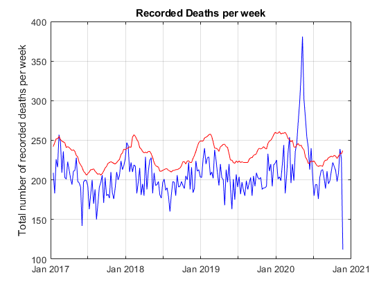
How About the Whole of the USA?
What does the same data look like if plotted across the whole of the USA? Whilst we removed the aggregate numbers from the table earlier we can easily reproduce them by grouping the data by its date and summing across all the states. Use findgroups based on the WeekEndingDate to define the groups of data that all have the same week ending date so that splitapply on these groups can sum all the numbers for all states in each group to get the correct aggregate numbers.
G = findgroups(t.WeekEndingDate); plot(timeRange, splitapply(@sum, t.ObservedNumber, G), 'b') hold on plot(timeRange, splitapply(@sum, t.UpperBoundThreshold, G), 'r') grid on title 'Recorded Deaths per week' ylabel 'Total number of recorded deaths per week' hold off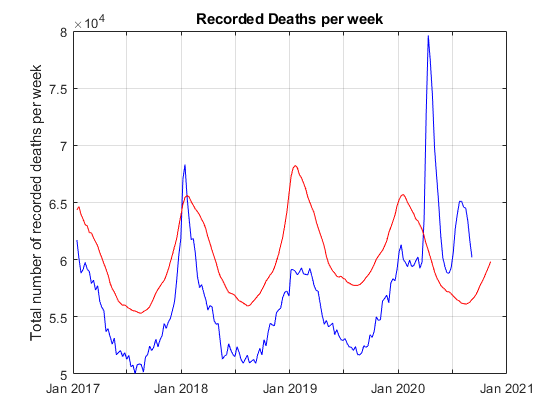
[_Mid Sept 2020 comment_] Note the significant spike during winter 2017 - 2018 flu season. In addition it appears that across the whole of the USA excess mortality doesn't seem to returned under the upper threshold, is running about 8,000 per week higher than expected for this time of year, and appears to be on an upward trend.
How Many States are Exceeding their Upper Bound?
Given that we know at any given time if a State is exceeding its threshold we can easily plot the number of states that exceed their upper bound for the time range.
plot(timeRange, splitapply(@sum, t.ExceedsThreshold, G));
grid on
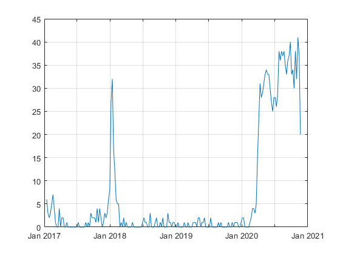 Again note the significant jump in the flu season for 2017-2018, and that currently about 30 states are still above their upper bound. But this is just an aggregate number, it might be interesting to see which states are currently above their bound and to see the evolution of the pandemic across the continental USA over time by tracking which states exceeded their bound at a given point in time.
Which States are Exceeding their Upper Bound?
To look at which states are exceeding their upper bound (and by how much) we need to look at a point in time. We will measure this as a number of weeks since the latest data were recorded. We can then sub-select all the data so that we only have a particular week to analyse. Move the slider below to see what happens week by week across the US
weeksAgo = 1; X = t(t.WeekEndingDate == timeRange(end-weeksAgo), :);
Use the location table joined with the data on State so that we now have the Latitude and Longitude of the States on our geobubble chart
% Join tables X = outerjoin(X,locations,'Type','left','Keys',{'State'});
The bubble size should be normalized by the expected number of deaths in a given state. So compute the excess mortality (Observed - upper bound) and divide by something like the standard deviation (upper bound minus expected). This number is essentially the number of standard deviations from the expected for that State.
X.BubbleSize = max((X.ObservedNumber - X.UpperBoundThreshold)./(X.UpperBoundThreshold-X.AverageExpectedCount), 0);
Convert ExceedsThreshold to a categorical so that it can label the geobubble chart
X.ExceedsThreshold = categorical(X.ExceedsThreshold); X = X(X.ExceedsThreshold == "true", :); geobubble(X, "Latitude", "Longtitude", ... "Basemap","darkwater", ... "SizeVariable", "BubbleSize", ... "ColorVariable", "ExceedsThreshold", ... "MapLayout", "normal", ... "SizeLimits", [0 10]);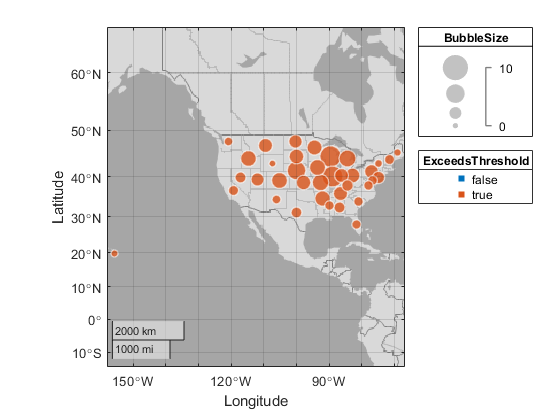
And set the plot limits to roughly the edges of the continental USA.
geolimits([20 51],[-126 -65])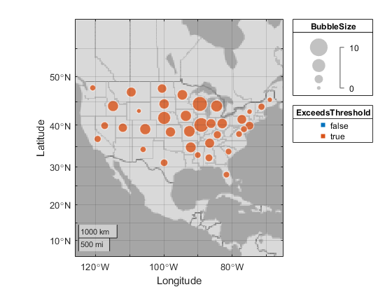
This plot shows which states are exceeding their expected threshold and the size of the bubble indicates (in a population normalized way) by how much they are over. By changing the slider above (i.e. changing the week you are looking at) you can investigate the evolution of the pandemic across the states, watching its evolution mostly from the east coast at the beginning of the pandemic to the southern states more recently.
Cumulative Excess Deaths
R = t(t.WeekEndingDate > datetime('1-Feb-2020'), :); x = unique(R.WeekEndingDate); G = findgroups(R.WeekEndingDate); plot(x, cumsum(splitapply(@sum, R.ExcessLowerEstimate, G)), 'b') hold on plot(x, cumsum(splitapply(@sum, R.ExcessHigherEstimate, G)), 'r') grid on title("Total Excess Deaths since 1 Feb 2020") legend(["Lower Bound Estimate" "Upper Bound Estimate"], "Location", "best") hold off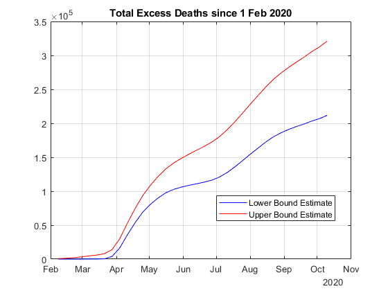
Weekly Deaths By Year
dtvec = []; for n=2017:2021 dtvec{end+1} = ['1-Jan-' num2str(n)]; end for n=1:length(dtvec)-1 R = t(t.WeekEndingDate >= datetime(dtvec{n}), :); R = R(R.WeekEndingDate < datetime(dtvec{n+1}), :); R = R(~isnan(R.ObservedNumber), :); x = unique(R.WeekEndingDate); G = findgroups(R.WeekEndingDate); plot(week(x), splitapply(@sum, R.ObservedNumber, G)./1000) hold all end grid on title("Weekly deaths by year") xlabel('week of year') ylabel('deaths in thousnads') legend(dtvec(1:n)); hold off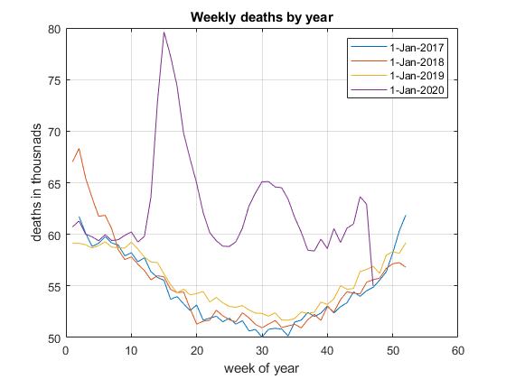
Cumulitive Deaths By Year
dtvec = []; for n=2017:2021 dtvec{end+1} = ['1-Jan-' num2str(n)]; end for n=1:length(dtvec)-1 R = t(t.WeekEndingDate >= datetime(dtvec{n}), :); R = R(R.WeekEndingDate < datetime(dtvec{n+1}), :); x = unique(R.WeekEndingDate); G = findgroups(R.WeekEndingDate); plot(week(x), cumsum(splitapply(@sum, R.ObservedNumber, G))) hold all end grid on title("cumulative sum of deaths by year") xlabel('week of year') ylabel('deaths total') legend(dtvec(1:n), 'Location', 'southeast'); hold off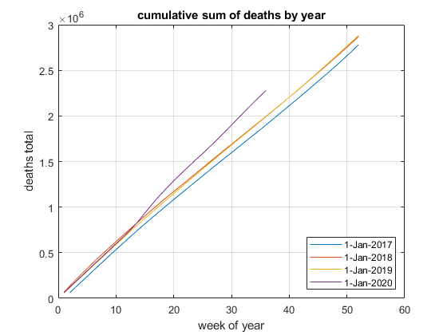
Covid Deaths by Age
In this section we download a different data set that uses only COVID coded deaths. This data set contains a breakdown by age, sex, and week.
%https://data.cdc.gov/NCHS/Provisional-COVID-19-Death-Counts-by-Sex-Age-and-W/vsak-wrfu t2 = webread('https://data.cdc.gov/api/views/vsak-wrfu/rows.csv'); t2.Sex = categorical(t2.Sex); t2.AgeGroup = categorical(t2.AgeGroup); t2 = t2(t2.AgeGroup ~= "All Ages" & t2.Sex ~= "Male" & t2.Sex ~= "Female",:); timeRange2 = unique(t2.EndWeek); agerange = unique(t2.AgeGroup); G = findgroups(t2.EndWeek); for n=1:length(agerange) plot(timeRange2, t2(t2.AgeGroup == agerange(n),:).COVID_19Deaths); hold all; end legend(cellstr(agerange)) title('Covid deaths by age and week') hold off;
Warning: The DATETIME data was created using format 'MM/dd/uuuu' but also
matched 'dd/MM/uuuu'.
To avoid ambiguity, use a format character vector. e.g. '%{MM/dd/uuuu}D'
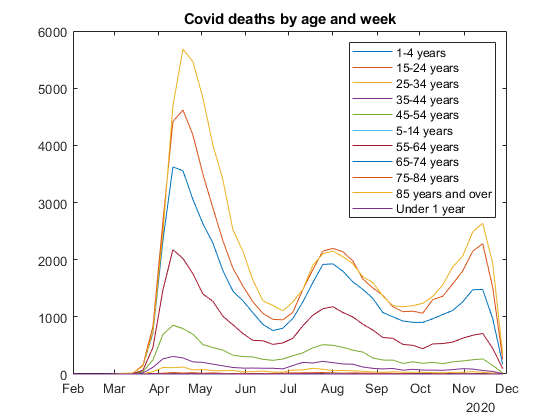 COVID New Cases, Deaths and Rough Mortality Trend
In this section we download a dataset for New Deaths and New Cases by day and state.
t3 = webread('https://data.cdc.gov/api/views/9mfq-cb36/rows.csv');
t3.state = categorical(t3.state);
timeRange3 = unique(t3.submission_date);
G = findgroups(t3.submission_date);
Let's look at the new cases and deaths, by day, for the entire US.
[h1a, h2a] = case_death_mort(G, timeRange3, t3);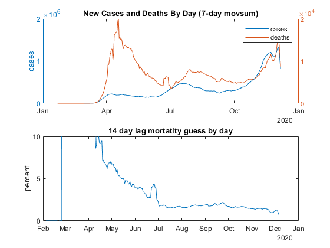
Lets look at the same plots, but for just one state.
state_of_interst = 'CA';
t_state = t3(t3.state == state_of_interst, :);
G = findgroups(t_state.submission_date);
[h1b, h2b] = case_death_mort(G, timeRange3, t_state);
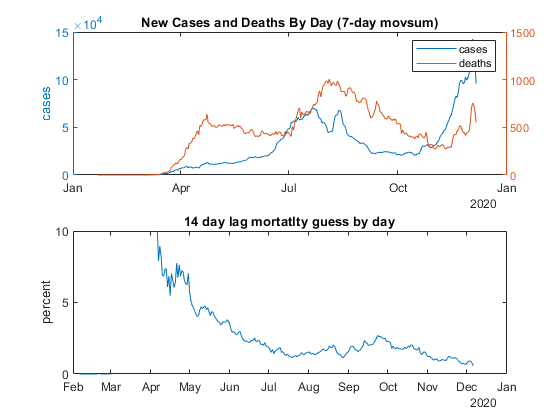 Let's extract the mortality numbers from each chart and make new chart showing both. If the mortality was primiarly driven by 'vulnerable' individuals dieing early we should expect to see a different shape mortality curve for a later hit state as compared to the US total.
figure; d = h2b.XData; mort_us = h2a.YData; mort_state = h2b.YData; plot(d, mort_us, d, mort_state); ylim([0 10]); ylabel('percent'); title(['Mortatlity of all US compared to ' state_of_interst ]) legend('US', state_of_interst);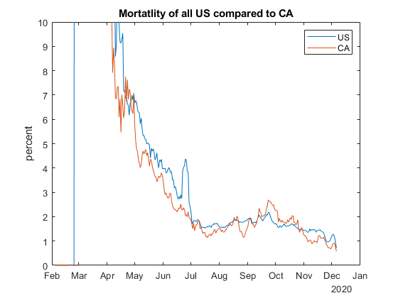
Misc Functions
function [h1,h2] = case_death_mort(G, timerange, tt) % anonymous function for delays a vector shift = @(data, delay) [zeros(delay,1); data(1:end-delay)]; figure; subplot(211); h1 = plotyy(timerange, movsum(splitapply(@sum, tt.new_case, G), 7), ... timerange, movsum(splitapply(@sum, tt.new_death, G), 7) ... ); ylabel('cases'); title('New Cases and Deaths By Day (7-day movsum)'); legend('cases', 'deaths'); subplot(212); h2 = plot(timerange, ... 100 * ... movsum(splitapply(@sum, tt.new_death, G), 7) ./ ... shift(movsum(splitapply(@sum, tt.new_case, G), 7), 14) ... ); ylim([0 10]) ylabel('percent'); title('14 day lag mortatlty guess by day') end